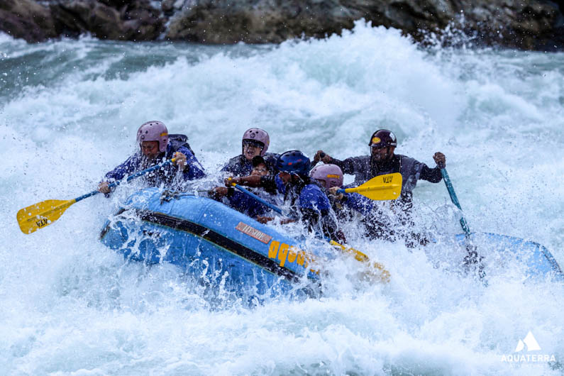

White Water Rafting
"We go rafting every 1-2 years and we ALWAYS go with All-Outdoors. A great family owned company, AMAZING food on the river, knowledgeable and fun guides, and an all around fantastic experience.
History
The sport of whitewater rafting was in its infant stages
in 1962. That spring George Armstrong placed a small raft
into the Stanislaus River near Yosemite National Park and
ventured into the unknown. He lived to tell about it and
fell in love with rivers and rafting.Soon he and his family
were sharing their new found love with others. A lot has been
learned since those early days of rafting, but the same joy and
excitement initially experienced on the river has only grown. And
so has the All-Outdoors family.Now, over 60 years later, three
generations of Armstrongs and the All-Outdoors staff welcome more
than 10,000 guests on river trips throughout California each year!.
Our professionally trained and certified guides are
dedicated to your overall rafting experience. Not only are AO guides skilled
and versatile whitewater navigators thanks to the unparalleled training opportunities
on our 10 California rivers, they are respectful, friendly and personable.The ability
to connect with a wide variety of personalities and a passion for sharing the beauty of
California’s river canyons in the most fun and safe possible way is what sets AO guides apart.
Adventure Awaits You
water ride
water ride
water ride

water ride
water ride5